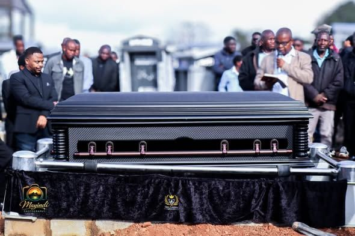

Funerals
Dignified, affordable and reliable
Arranged Around Your Family
A funeral is a family's last gift to a loved one. We sit down with you, listen to your wishes and traditions, and plan a service that honours the person you have lost.
A Complete Funeral Service
We handle the arrangements from start to finish: collection and mortuary care, the casket, hearse and family cars, and a fully decorated graveside.


Included in every SWA funeral
What We Take Care Of
From the first call to the last flower at the graveside, one team handles every detail so your family can grieve together.
- 01
Quality casket
A dignified casket chosen with your family from our range.
- 02
Hearse & family car
Our own V300 or Touareg hearse, with family cars for the procession.
- 03
Tent & chairs
Graveside tent and seating set up before the family arrives.
- 04
Funeral décor
Flowers, draped tables and a memorial display at the service and graveside.
- 05
Programme coordination
We plan the order of service and timing with the family, church and cemetery.
- 06
All faiths & cultures
Christian, traditional and cultural customs honoured as your family wishes.
Where Beauty Softens Your Grief.
— SWA Funeral Services · We lead, they follow
Funeral Plans
Learn More
Our Fleet
Learn More